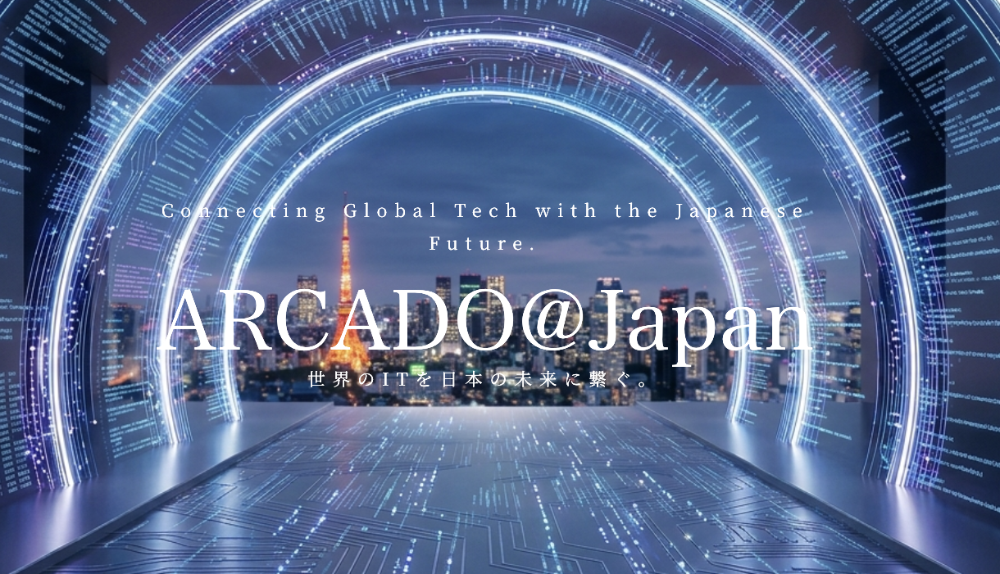
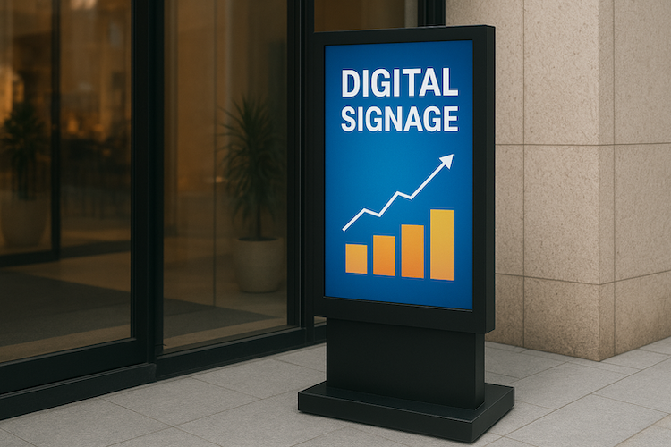
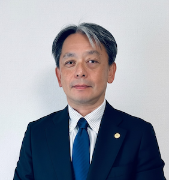

Forward ever,
beyond expectations.
前進あるのみ。期待の先へ。
活知恵（カッチェ）は、国内外の多様な実務で培った豊富な経験と知恵を活かして、あらゆる新しいチャレンジに伴走する、テクノロジー＆コンサルテーションカンパニーです。
どんな困難な状況でも胸を張り、常に前を向いて創意工夫を重ねることによって、期待を超える「結果」を生み出し、未来を「共創」します。
Kacche is a technology and consultation company that supports all kinds of new challenges, leveraging extensive experience and wisdom gained through diverse operations both in Japan and overseas.
By facing any difficulty with confidence and continuous ingenuity, we produce results that exceed expectations and co-create the future together.
Topics
More in noteServices

海外テック企業の日本進出支援 Business Development in Japan
海外発のスタートアップや優れた技術を有する海外企業の日本市場への進出や事業拡大を支援します。
これまでに様々なITシステムやアプリケーションを国内外の企業と共創してきた実績を活かして、海外の優れたIT開発企業と日本企業をマッチングします。
We support overseas IT companies with superior technologies in their entry and expansion into the Japanese market.
Based on our extensive experience in system and app development, we connect these companies with Japanese enterprises to facilitate collaboration and growth.

海外市場開拓支援 Global Market Development
日本の機能美に溢れる工芸製品の海外市場開拓をワンストップで支援する B2B プロジェクト理華堂プロジェクトにチャレンジしています。
日本の製造事業者やクリエイターと海外の販売事業者をマッチングし、マーケットインの発想で海外市場を切り拓く B2B 事業です。
We are challenging the RICADOU Japan B2B project, providing one-stop support for the international market expansion of Japanese craft products renowned for their functional beauty.
This B2B initiative connects Japanese manufacturers and creators with international retailers, opening up global markets through a market-in approach.
創業・新規事業創出支援 Startup Support
創業に伴う事業計画の立案、ブランディング、商品開発、販促活動、各種助成金やIT導入のための補助金の活用まで、新たなビジネスを「成功」に結びつけるために必要なあらゆるプロセスにおいて、実務レベルで伴走します。
We provide hands-on support for every essential process to ensure the success of new businesses, from drafting business plans and branding to product development, sales promotion, and utilizing various subsidies for IT implementation.
IT システム・アプリ開発 IT Systems & App Development
様々なシステム開発やアプリ開発の豊富な経験と最新のAI/IT技術を活用し、お客様のビジネスニーズと費用に応じた最適なソリューションをご提案・開発・運用いたします。
Leveraging our extensive experience in system and app development alongside cutting-edge AI and IT technologies, we propose, develop, and operate optimal solutions tailored to your business needs and budget.

デジタル化・各種技術支援 Digital & Technical Support
現代のビジネスにおいては、様々なデジタルツールの活用が不可欠です。当社は、お客様のお困りごとやビジネス状況に応じて、最適なデジタルソリューションを選定し、導入、活用までを伴走支援します。
The use of various digital tools is indispensable in modern business. We provide end-to-end support, from selecting the optimal digital solutions based on your specific challenges and business context to their implementation and utilization.
About
-
- 社名
- Company Name
- 活知恵（カッチェ）合同会社
- Kacche LLC
-
- 設立
- Established
- 2026年1月7日
- January 7, 2026
-
- 資本金
- Capital
- 300万円
- 3,000,000 JPY
-
- 本社
- Head Office
- 東京都狛江市岩戸南
- Iwato-minami, Komae City, Tokyo, Japan
-
- 事業内容
- Business Activities
-
1．創業、海外市場開拓、地域活性化、DX化等に関するコンサルティング事業
2．ブランディングおよび販売促進支援に係るコンテンツの企画、制作
3．事業改善に資するITシステム等の企画、開発、導入、保守及び運用
4．上記に関する製品企画、販売（電子商取引を含む）及び輸出入
5．上記に関する旅行業及び観光関連事業
6．上記に関するイベントの企画、運営
7．前各号に付帯又は関連する一切の事業1. Consulting for business startup, global market development, regional revitalization, and DX.
2. Planning and production of content related to branding and sales promotion support.
3. Planning, development, implementation, and maintenance of IT systems for business improvement.
4. Product planning, sales (including e-commerce), and import/export related to the above.
5. Travel and tourism-related business related to the above.
6. Event planning and management related to the above.
7. All businesses incidental or related to each of the preceding items.
-
- 代表社員
- CEO
- 野口 紀彦 (クリックで略歴を表示)
- Norihiko Noguchi (Click to view profile)
- プロフィール
- Profile

- 保有資格
- Certifications
-
・中小企業診断士（経済産業大臣任命・2011年登録）
・高度情報処理技術者（IPA認定・エンベデッドシステムスペシャリスト）
・国内旅行業務取扱管理者 -
- Registered Management Consultant (SME Consultant)
- Embedded Systems Specialist (Advanced Information-Processing Engineer, IPA Japan)
- Certified Domestic Travel Service Manager
- 略歴
- Career Summary
- 1990.03
- 東京工業大学（現：東京科学大学）大学院・理工学研究科・制御工学専攻修了
- Graduated from the Department of Control Engineering, Graduate School of Tokyo Institute of Technology(Tokyo Sience of Technology).
- 1990.04
- ソニー株式会社入社。映像制作機器（XDCAM等）の新商品企画、欧州市場（英国赴任）での販促に従事。世界50ヵ国以上でのビジネスを経験。
- Joined Sony Corporation. Engaged in product planning for professional video equipment (XDCAM, etc.) and sales promotion in the European market (stationed in the UK).
- 2015.09
- 日本貿易振興機構（ジェトロ）入構。海外スタートアップと日本企業のマッチング等、イノベーション支援事業を推進。
- Joined JETRO (Japan External Trade Organization). Promoted innovation support projects such as matching overseas startups with Japanese companies.
- 2018.07
- レシップ株式会社入社。執行役員（ビジネス開発担当）として、クラウド型デジタルサイネージや観光DXシステム QUICK TRIP を新規開発し、 東京駅八重洲口JR高速バスターミナルや、静岡県・富士山入山管理システムなどに採択されるなどの新規事業を統括。
- Joined LECIP Corporation. As Executive Officer (Business Development), oversaw new business initiatives in Digital Signage and Tourism DX. Successfully launched new products such as the cloud-based digital signage and tourism DX system QUICK TRIP, which was adopted for the JR Express Bus Terminal at Tokyo Station Yaesu Exit and the Mt. Fuji Climbing Management System in Shizuoka Prefecture.
- 2026.01
- 活知恵合同会社を設立。代表社員に就任。
- Established Kacche LLC.
Project
-
ARCAD@Japan - 世界のITスタートアップと日本企業の架け橋 ARCAD@Japan - A Bridge for IT Startups to the Japanese Industries
日本のIT人材の不足は、中小企業や中堅企業にとって特に深刻な課題となっています。 ARCAD@Japanは、海外の優れたIT開発企業と日本企業をマッチングし、国内のIT人材不足を補うとともに、海外企業の優れた技術を日本の市場に展開するプロジェクトです。
ARCAD@Japan is a project that matches overseas leading IT development companies with Japanese enterprises, supplementing the domestic IT talent shortage and supporting the expansion of overseas companies into the Japanese market.
-
理華堂 - 機能美溢れる工芸品の世界への架け橋 RICADOU Japan - A Bridge to the World for Selected Japanese Crafts
「理華堂（りかどう）」は、伝統技術とデザインに裏付けされた「理由のある（理）」「華やかな（華）」日本製品を厳選し、世界各国の販売店に届けるプロジェクトです。 日本の製造事業者やクリエイターと海外の販売事業者をマッチングし、マーケットインの発想で海外市場を切り拓きます。
"RICADOU Japan" is a project that carefully selects "meaningful" (Ri) and "brilliant" (Ca) Japanese products backed by traditional techniques and design to deliver them to retailers worldwide. We match Japanese manufacturers and creators with overseas distributors to open up international markets through a market-in approach.
-
創業セミナー Entrepreneurship Seminars
東京都のサービスである東京開業ワンストップセンターや、地方自治体、大学、企業などを対象として、 創業に関するセミナーやワークショップを開催しています。創業に必要な知識やノウハウを提供し、創業者の成功を支援します。
We organize seminars and workshops on starting a business at the Tokyo One-Stop Business Establishment Center and local government offices. We support the success of entrepreneurs by providing the essential knowledge and expertise required for a business launch.